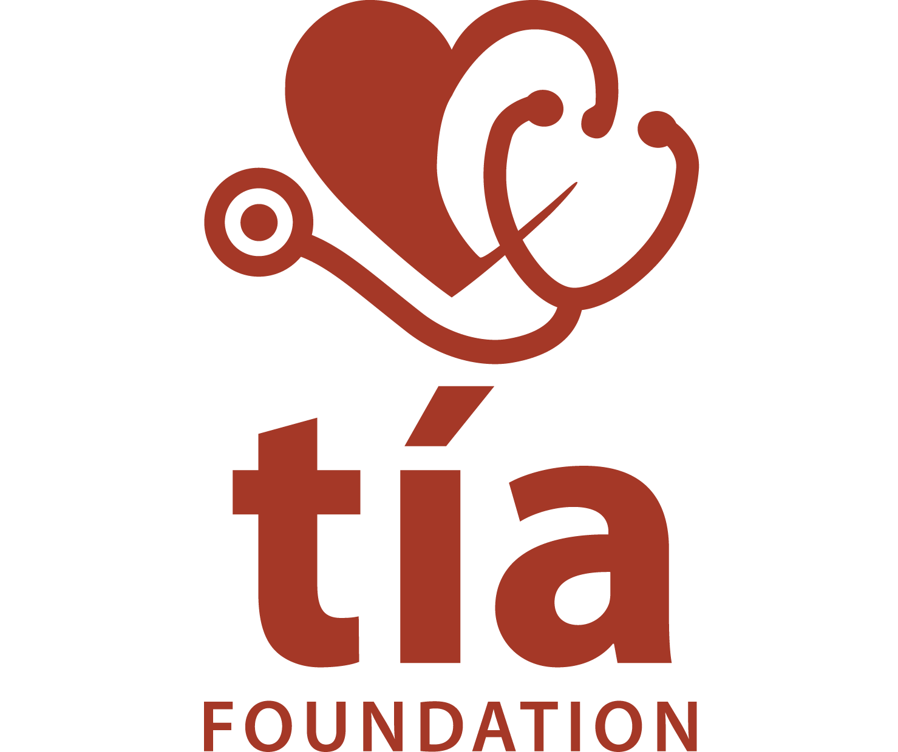

The Tía Foundation
Manual y App de Salud Comunitaria
🚨 EMERGENCIAS
Qué hacer ahora mismo ante una urgencia
🚦 Signos Vitales
Tomar, interpretar y saber cuándo es peligro
💉 Aplicación de Medicamentos y Soluciones
Inyecciones, sueros, dosis y técnica segura
🩹 Heridas, Vendajes y Quemaduras
Sangrados, fracturas, inmovilización y quemaduras
🤰 Trabajo de Parto
Identificar parto, atender y reconocer peligro
🥗 Nutrición Saludable
Alimentación con lo que hay en la comunidad
🧠 Primeros Auxilios Psicológicos
Cómo ayudar en crisis emocional o trauma
📘 Manual Completo
Todo el contenido para lectura continua